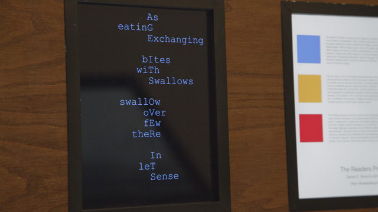
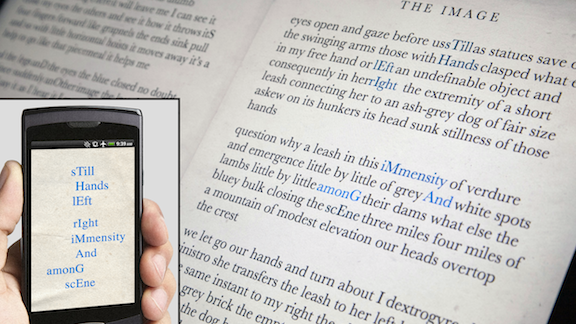
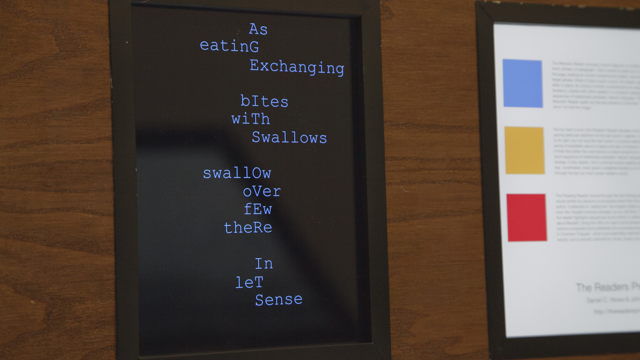
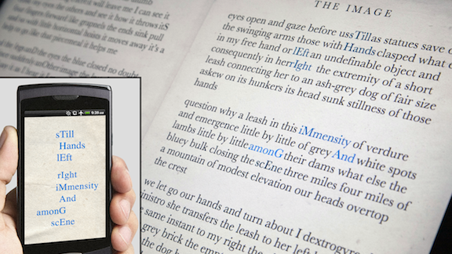

Social Life of Forms
Mixed media networked installation, custom software
held at the Creative Media Center, Kowloon Tong, Hong Kong, 21-23 Mar 2013
In this installation three unique readers (a aPhrasing Reader, a Mesostic Reader, and a Perigram Reader move through Samuel Beckett's short prose piece 'The Image'.
A larger, aggregate view (the podium display) presents a typographic 'opening' as it is traversed by the readers. The knob-interface, at the podium, invites visitors to choose a specific reader to have 'focus' and to initiate page-turns.
The smaller, single-reader views (displayed on wall-mounted iPods) show the paths chosen by specific readers, in colors corresponding to those on the podium display, moving through the text. Additionally, visitors to the gallery were invited to subscribe to individual readers on their laptops, web-enabled phones, or other mobile devices.
 


